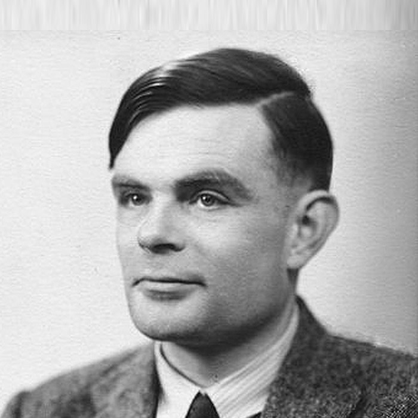
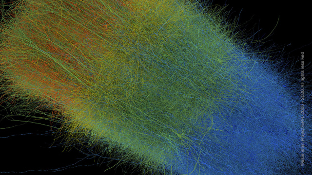
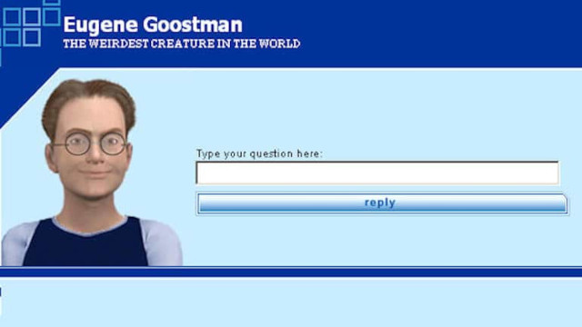
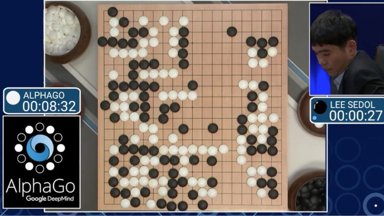

C2-IA-01 : Histoire de l’Intelligence Artificielle#
Objectifs pédagogiques#
connaître quelques éléments d’histoire de l’intelligence artificielle
C’est quoi l’intelligence artificielle ?#
L’intelligence artificielle (IA) est un domaine de l’informatique qui vise à créer des systèmes capables de réaliser des tâches qui nécessitent normalement l’intelligence humaine. Ces tâches incluent la reconnaissance de motifs, la prise de décisions, l’apprentissage, la perception et le langage naturel.
On peut classer l’IA en deux catégories principales :
IA faible (ou IA étroite) qui se concentre sur des tâches spécifiques. Par exemple : les systèmes de recommandation sur les plateformes de streaming ou les chatbots. Siri est un autre exemple d’IA faible.
IA forte (ou Intelligence Artificielle Générale) qui vise à égaler ou à surpasser l’intelligence humaine dans tous les aspects. C’est l’objectif principal des outils tels que chatgpt. En 2024, il n’existe aucun outil ayant les caractéristiques d’une intelligence artificielle générale : être capable de planifier, comprendre des concepts abstraits, résoudre des problèmes, prendre des décisions en tenant compte de l’incertitude, apprendre, communiquer en langage naturel et faire preuve de créativité.
Histoire de l’IA#
Pour comprendre comment on en est arrivé à l’intelligence artificielle générative telle que chatgpt, stable diffusion ou MusicGen et AudioGen de Meta, il est utile de faire un brève historique des avancées dans le domaine de l’IA.
1943 - 1960 : les débuts#

1943 : le modèle de McCulloch et Pitts est la première description d’un modèle mathématique de neurone artificiel.

1950, Alan Turing publie son célèbre article Computing Machinery and Intelligence qui décrit le fameux Test de Turing comme mesure de l’intelligence artificielle : une machine est considérée comme intelligente si elle peut converser de manière indiscernable avec un humain

1956 : la Conférence de Dartmouth est considérée comme l’acte de naissance officiel de l’intelligence artificielle. Elle est organisée par John McCarthy et Marvin Minsky et réuni une vingtaine de chercheurs (tels que le mathématicien Claude Shannon, Nathan Rochester architecte de l’IBM 701 et Ray Solomonoff. C’est durant cette conférence que McCarthy a proposé le terme d’intelligence artificielle

1957 : le psychologue américain Frank Rosenblatt implémente pour la première fois le modèlede McCulloch et Pitts d’abord sur un Mark 1, puis sur un IBM 704. Il le nomme le Perceptron. C’est le premier algorithme d’apprentissage automatique de classificateur binaire (qui sépare deux catégories).
1960 - 1970 : l’enthousiasme#

1964 : l’informaticien Joseph Weizenbaum créé le robot conversationnel ELIZA qui simule un psychothérapeute.

1965 : premier système expert, un programme informatique permettant de reproduire les mécanismes cognitifs d’un expert d’un domaine particulier basé sur trois composants : une base de faits, une base de règles et un moteur d’inférence (logiciels permettant de dériver des conclusions à partir des deux bases de faits et règles).
1970 - 1980 : la première chute#
Les modèles mathématiques sont aboutis et permettent de démontrer qu’il est possible de créer une intelligence artificielle étendue. Le problème vient de la limite de la puissance de calcul des ordinateurs du marché.

1971 : en parallèle à la limite de performance des ordinateurs, Stephen Cook démontre qu’il existe quantité de problèmes dont il n’existe pas d’algorithme de complexité dans la classe polynomiale.

1980 : John Searle publie une expérience de pensée qu’il appelle la chambre chinoise qui mettra fin temporairement aux espoirs de la création d’une intelligence artificielle. Le principe de la chambre chinoise est la suivante. Une personne qui ne connaît pas la langue chinoise est enfermée dans une chambre. Cette personne reçoit des instructions (règles) en chinois à l’aide d’un livre de règles. Cette expérience remet en question l’idée que la compréhension et la conscience résultent uniquement du traitement symbolique de l’information sans une véritable compréhension sémantique. Cette expérience remet aussi en cause le test de Turing.
1980 - 2000 : la montée et la seconde chute de l’IA#
années 1980 : les systèmes experts deviennent largement utilisés dans divers domaines : ingéniérie, finance, médecine.

1997 : le programme Deep Blue devient le premier à battre un Grand Maître International (GMI) et champion du monde d’échec, le Russe Garry Gasparov.
Fin des années 1990 : limite de l’IA visible. Désintérêt et arrêt des financements gouvernementaux aux projets d’intelligence artificielle. Hiver de l’IA

2001 : Imaginé en 1966 par le réalisateur Stanley Kubrick, HAL 9000, l’ordinateur du film 2001 : Odysée de l’Espace doté d’une intelligence artificielle forte n’existe toujours pas. Les meilleures prévisions sont pour 2030.
2000 - 2010 : l’apprentissage automatique#
Le début des années 2000 voit le retour de l’intelligence artificielle au plus haut niveau. Cela est possible grâce à la puissance des ordinateurs qui permettent d’exécuter des programmes d’apprentissage automatique (Machine learning en anglais).

2005 : L’EPFL lance le projet Blue Brain qui vise à développer un cerveau artificiel complet par Henry Markram. Ce projet sera aussi le point de départ du Flagship project de l’Union Européenne Human Brain Project. Ce projet a été possible grâce au développement de superordinateurs spécifiques, notamment le IBM Blue Gene.

2006 : le laboratoire LACAL du Professeur Arjen Lenstra avec le laboratoire LIN du Professeur Michel Deville et le centre de recherche en physique des particules (CRPP) de l’EPFL construisent un superordinateur dont les briques sont des Sony Playstation 3 équipées du processeur CELL extrêmement puissant. Des algorithmes d’apprentissage automatique y sont testés avec succès.

2007 : Apple lance Siri, un logiciel d’apprentissage automatique pour les smartphones.
2010 - 2020 : omniprésence de l’IA#
Les années 2010 et surtout 2020 voient l’arrivée d’algorithmes toujours plus performants d’apprentissage automatique. Ce qui n’était pas possible dix ans auparavant est une réalité : reconnaissance vocale, vision par ordinateur, traduction sémantique.

2014 : l’intelligence artificielle Eugene Goostman Russe qui simule un jeune garçon de 13 ans parlant ukrainien est le premier programme de l’histoire à passer le test de Turing, 64 ans après avoir été formulé.

2016 : le programme AlphaGO bat le champion du monde de jeu de Go Lee Sedol.

2020 : L’entreprise américaine OpenAI rend public son intelligence artificielle générative Chat-GPT
Bibliographie#
Warren S. McCulloch, Walter Pitts, A logical calculus of ideas immanent in nervous activity, Bulletin of mathematical biology, vol 52, pp. 99-115, 1943
Alan Turing, Computing machinery and Intelligence, Mind, Vol LIX, pp 443-460, 1950
John Searle, Minds, Brains, and Programs, The behavioral and brain sciences, 3, pp. 417-457, 1980